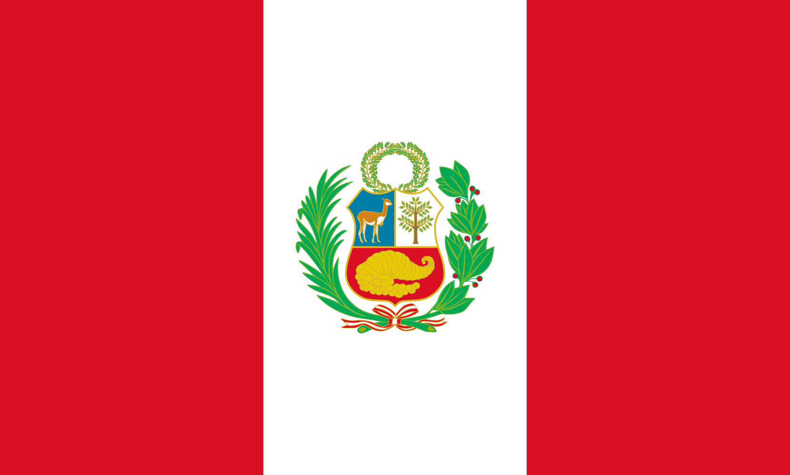

My name is Mario Alberto Astonitas, but most people call me by my last name, Astonitas. I was born in Cajamarca, Peru, but now I live in Lima, the capital of Peru. I currently work in advertising, where I'm passionate about creating impactful campaigns and connecting with audiences. I enjoy playing musical instruments like the piano and guitar; music has always been a significant part of my life and a way for me to express myself.
About Me

Lima, Peru

Peru is one of the most biodiverse countries in the world and is located on the western coast of South America. It is home to nearly 10% of the world's plant and animal species, many of which are unique to the country. Peru is famous for its cultural heritage, especially Machu Picchu, the ancient Incan city located in the Andes, as well as the Peruvian Amazon, its snow-capped mountains, and its internationally renowned cuisine.